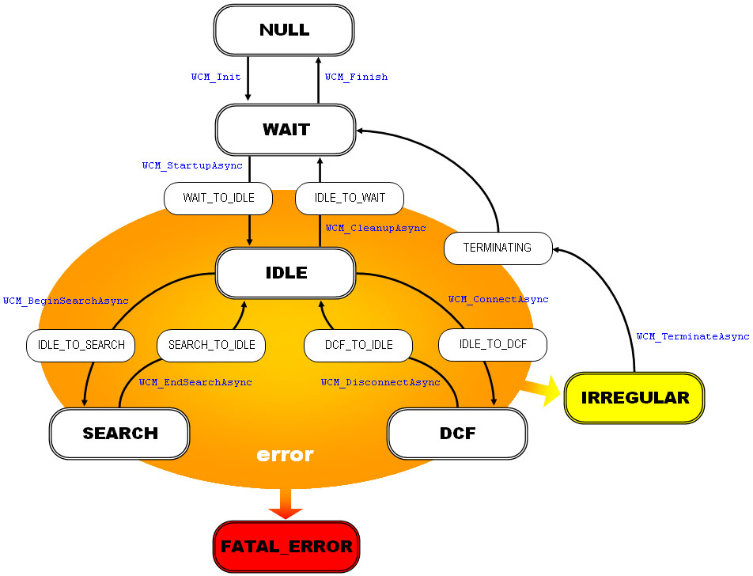
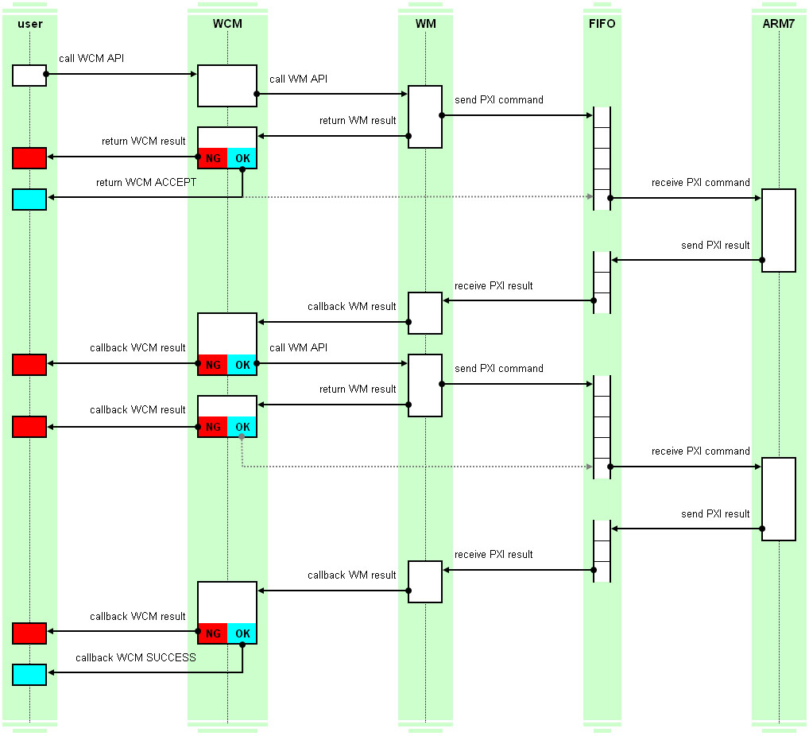

The WCM library is a higher-level library of the WM library that specializes in the feature to search for nearby wireless access points and connect to and disconnect from these access points when performing wireless communication in Infrastructure Mode.
Because the WCM library manages the WM library status, do not use the WM or MB libraries directly while using the WCM library.
The WCM library functions as a stack that bridges the CPS (TCP/IP protocol stack) library and the wireless driver when sending or receiving data while connected to a wireless access point. The interface that directly sends or receives the data using the WCM library is designed to be used only by the CPS library and not released as an API. In addition, in order to prevent disconnection from the wireless access point when there is no communication during the connection, the WCM library automatically sends a null packet to keep the connection alive after about one minute of no communication. Note that this keep-alive feature uses the OS library's alarm feature.
State transitions for the WCM library are shown in the following diagram. Each state is defined as a WCM_PHASE_* constant. For details on each state, see WCM library constants.
WCM_PHASE_NULL.
WCM_PHASE_IDLE is the state that is ready for wireless communication. It does not communicate. WCM_PHASE_SEARCH state automatically searches for a nearby wireless access point. For information on auto-search, see below.
WCM_PHASE_DCF is that state indicating that the device is connected to a wireless access point. Only in this state can communication in Infrastructure Mode actually take place.
WCM_PHASE_IRREGULAR state indicates that an error has occurred, but it is recoverable. However, the only possible action is to forcibly terminate using the WCM_TerminateAsync function.
WCM_PHASE_FATAL_ERROR state means that the internal state can no longer be managed because a fatal error has occurred. Because recovery is not possible, display a screen telling the user to turn off the power, etc.

The APIs that change the WCM library's internal state are all asynchronous processes, except for the initialize and terminate functions. The asynchronous APIs in the WCM library return a processing result that indicates whether the asynchronous process could start. When WCM_RESULT_ACCEPT is returned, the asynchronous process has been started normally and a callback indicating the processing result must occur once. Internally, one or more asynchronous APIs in the WM library are called one or more times successively and only the final processing result is notified with the callback. For example, if asynchronous APIs in the WM library were called twice successively, the process flow would be as follows.

When starting a wireless access point auto-search using the WCM_BeginSearchAsync function in the WCM library, even after the asynchronous processing completion notification is made, the scan process automatically continues asynchronously inside the WCM library based on the settings. When the internal state is WCM_PHASE_SEARCH, it indicates that the asynchronous process started by the API call is not performed, but the scan process continues successively inside the library as an asynchronous process. As a result, wireless access point discovery notifications will be generated at irregular intervals. The scan process in auto-search scans the list of channels specified by the options, starting with the lowest number and proceeding in ascending order. When it has finished scanning the channel with the highest number, it returns to the channel with the lowest number and continues to scan. If you provide a buffer that can store a certain amount of search result data to the WCMConfig structure specified with the WCM_StartupAsync function, the wireless access point information will be listed in this buffer (as size permits) whenever a discovery notification is called back. To correctly access the listed information, the API set is provided. If you do not provide a buffer to store the search result information, you must provide some sort of buffer to store information inside the notification callback for wireless access point discovery.
07/22/2005 Initial version.